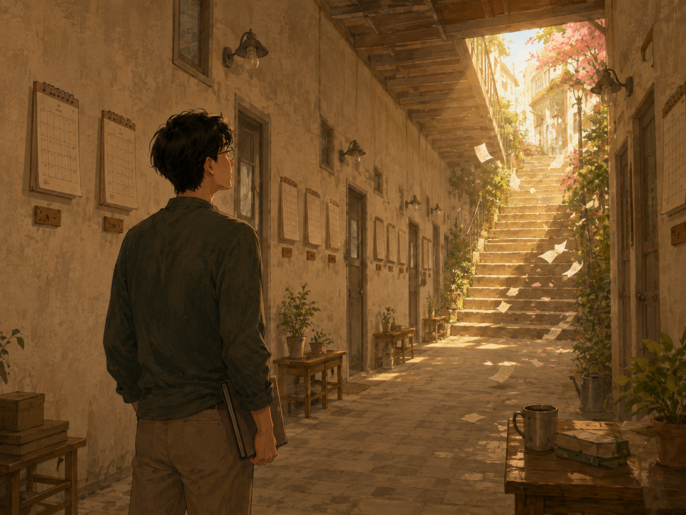

단속적인 인생

진화는 언제나 천천히 진행되는 것은 아니라고 한다.
오랜 시간 거의 달라지지 않던 생물이 어느 시기에 비교적 빠르게 변하고, 다시 긴 정체에 들어간다. 변화는 매일 조금씩 눈에 보이는 경사로가 아니라, 평평한 길 끝에서 갑자기 나타나는 계단에 가까울 때가 있다.
인생도 비슷한지 모른다.
어제와 오늘은 크게 다르지 않다.
지난주와 이번 주도 비슷하다.
아침에 일어나 같은 길로 출근하고, 익숙한 사람을 만나고, 미뤄둔 일을 다시 미룬다.
지난달의 나와 지금의 나를 나란히 세워놓아도 무엇이 달라졌는지 쉽게 찾기 어렵다. 작년에도 비슷한 고민을 했고, 올해도 같은 습관을 고치겠다고 생각한다.
그래서 우리는 내일도 오늘과 같을 것이라고 믿는다.
딱히 믿기로 결정한 것은 아니다. 계속 비슷한 날을 살아왔으니, 다음 날도 그 연장선일 것이라고 자연스럽게 생각할 뿐이다. 인생은 어제의 복사본을 한 장씩 출력하는 기계처럼 보인다.
하지만 돌아보면 꼭 그렇지만은 않았다.
어떤 사람을 만난 뒤 삶의 방향이 달라졌고, 우연히 시작한 일이 직업이 되었다. 무심코 읽은 한 문장이 오래된 생각을 흔들기도 했다. 별것 아니라고 여긴 선택이 몇 년 뒤 전혀 다른 곳으로 나를 데려다 놓기도 했다.
변화가 찾아오는 순간에는 그것이 변곡점인지 알지 못했다.
그날도 평범한 날이었다.
평소처럼 밥을 먹고, 평소처럼 피곤했고, 평소처럼 내일을 생각했다.
다만 나중에 돌아보니 그날을 기준으로 이전과 이후가 나뉘어 있었다.
우리는 흔히 인생이 매일 조금씩 나아져야 한다고 생각한다. 어제보다 오늘 더 성장하고, 오늘보다 내일 더 나아져야 한다고 자신을 재촉한다.
그러나 실제 삶은 그렇게 매끈한 그래프를 그리지 않는다.
오랫동안 제자리인 것처럼 보이는 시간이 있다. 노력해도 결과가 나타나지 않고, 같은 생각을 되풀이하며, 아무것도 변하지 않는 듯한 시기다.
그 시간이 반드시 헛된 것은 아닐 것이다.
겉으로는 정지해 있어도 보이지 않는 곳에서는 생각이 쌓이고, 관계가 자라고, 선택의 조건이 만들어진다. 그러다 어느 순간 작은 사건 하나가 그동안 쌓인 것들을 한꺼번에 움직인다.
갑작스러운 변화는 사실 갑자기 만들어진 것이 아닐지도 모른다.
다만 오랫동안 보이지 않았을 뿐이다.
작년과 지난달과 지난주와 어제와 오늘이 비슷했다고 해서, 내일까지 반드시 같으리라는 보장은 없다.
내일 우연히 누군가를 만날 수도 있다.
처음 보는 문장을 읽을 수도 있다.
오래 미뤄둔 일을 시작할 수도 있다.
반대로 예상하지 못한 사건이 지금까지의 계획을 모두 바꾸어놓을 수도 있다.
그 변화가 좋은 것인지 나쁜 것인지도 처음에는 알 수 없다.
분명한 것은 삶이 늘 같은 속도로 흐르지는 않는다는 사실이다.
긴 정체 뒤에 짧고 가파른 변화가 찾아오고, 변화 뒤에는 다시 평범한 날들이 이어진다. 우리는 그 평범한 날 속에서 다음 변곡점이 어디에 숨어 있는지 모른 채 살아간다.
그러니 오늘이 어제와 같다고 해서 낙담할 필요는 없을 것 같다.
아무 일도 일어나지 않은 것처럼 보이는 날도 삶의 일부다. 어쩌면 다음 변화가 시작되기 전, 길고 조용한 준비 기간일지도 모른다.
나는 내일도 오늘과 비슷할 것이라고 생각한다.
알람이 울리고, 익숙한 길을 걷고, 비슷한 고민을 할 것이다.
하지만 이제는 안다.
꼭 그렇지는 않았다는 것을.
그리고 앞으로도 꼭 그렇지는 않을 것이라는 것을.